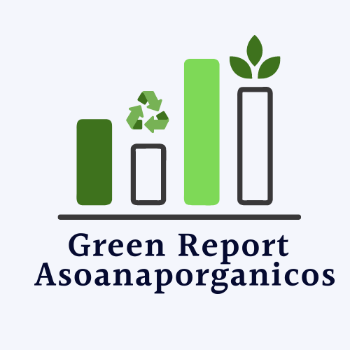

<div class="fondo">
    <div class="row align-items-center">
        
    </div>
    <div class="row align-items-center">
        <div class="col-12" style="text-align: center;">
            <label> Aplicación para la gestión integral de residuos sólidos</label>
        </div>
    </div>
    <div class="row align-items-center">
        <div class="col-12 padre">
            <div class="cuadro">
                <label> Registro de residuos sólidos aprovechables (plástico, papel, cartón), residuos sólidos perenes (Vidrios,
          metales, ferrosos y no ferrosos) y visualización de indicadores generados a partir del proceso de
          registro</label>
            </div>
        </div>
    </div>
</div>